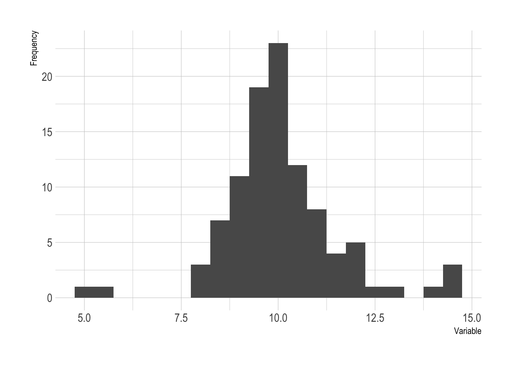
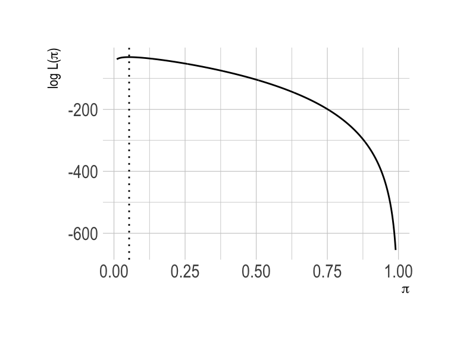
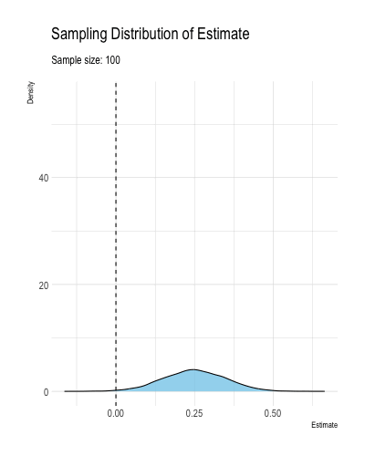
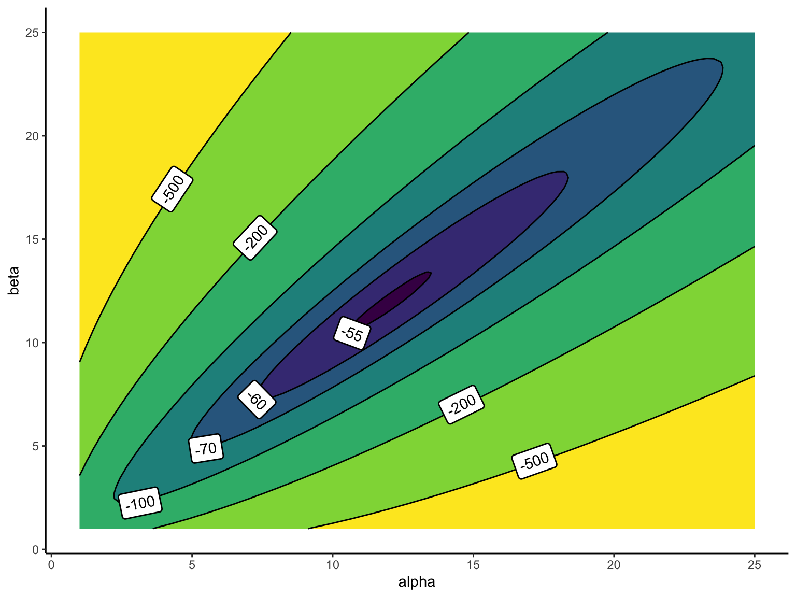

This week, I introduce our first “engine”: maximum likelihood. As a starting point, we use ML to estimate the parameters of Bernoulli, Poisson, and beta distributions (without covariates). Then I introduce the invariance property and show how we can use the invariance property to transform the estimated parameters into other quantities of interest. To evaluate the models, we use the predictive distribution.
1.1 Example: Bernoulli Distribution
As a running example, we use the toothpaste cap problem:
We have a toothpaste cap–one with a wide bottom and a narrow top. We’re going to toss the toothpaste cap. It can either end up lying on its side, its (wide) bottom, or its (narrow) top. We want to estimate the probability of the toothpaste cap landing on its top.
How can we do this in a principled way?
If we’re clever, we might immediately recognize that we can think of each toss as a sample from large population of sides, tops, and bottoms. Each toss is like a random sample from this large population. Then we know that the average of the sample is an unbiased estimator of the population mean. And this intuition works! As you might expect, the sample average is an unbiased estimator of the long-run chance of the cap landing on its top.
But not all problems are so easy. Suppose we create a histogram of our data and we notice several observations more than three standard deviations away from the mean. We might want to model these data with a Student’s t distribution. But how can we estimate the degrees-of-freedom parameter. It isn’t immediately clear how to estimate this parameter.

Figure 1.1: A histogram with heavy tails.
To approach the toothpaste cap problem in a more principled way, we can use use a probability model by specifying a probability distribution for the data. Then we can use maximum likelihood to find an estimator for the parameters of that probability distribution.
For the toothpaste cap problem, we can model each toss as a Bernoulli trial. We think of each toss as a random variable \(X\) where \(X \sim \text{Bernoulli}(\pi)\). If the cap lands on its top, we think of the outcome as 1. If not, as 0.
Suppose we toss the cap \(N\) times and observe \(k\) tops. To find the ML estimator, we simply find the parameter that is most likely to generate these data. Suppose we observe \(k = 25\) successes (i.e., tops) in \(N = 50\) trials (i.e., tosses). It’s intuitive that these data would be relatively unlikely if \(\pi = 0.1\) (i.e., the chance of a top is 10%) or if \(\pi = 0.1\) (i.e., the chance of a top is 90%). However, these data are relatively more likely if the c\(\pi = 0.45\) or \(\pi = 0.55\). But what value of \(\pi\) makes the data most likely? (You can probably guess, but let’s be formal!)
What is the ML estimate \(\hat{\pi}\) of \(\pi\)?
According to the model \(f(x_i; \pi) = \pi^{x_i} (1 - \pi)^{(1 - x_i)}\)—this is just the Bernoulli pmf. Because the samples are iid, we can find the joint distribution \(f(x) = f(x_1) \times ... \times f(x_N) = \prod_{i = 1}^N f(x_i)\). This product includes several repetitions of \(\pi\) and several repetitions of \((1 - \pi)\). We include \(k\)\(\pi\)s, because each of the \(k\) ones has probability \(\pi\). Similarly, we include \((N - k)\)\((1 - \pi)\)s, because each of the \(N - k\) zeros has probability \(1 - \pi\)). This gives us \(f(x; \pi) = \pi^{k} (1 - \pi)^{(N - k)}\). \[
\text{the likelihood: } f(x; \pi) = \pi^{k} (1 - \pi)^{(N - k)}, \text{where } k = \sum_{i = 1}^N x_i \\
\]
All we have to do now is find the value of \(\pi\) that maximizes this likelihood. This will be our ML estimator. But let’s proceed slowly.
First, it’s a little strange to maximize \(f(x; \pi)\) with respect to \(\pi\). After all, the notation encourages us to think of \(\pi\) as a fixed value and \(x\) as the variable. To make it clear that we’re now thinking of \(\pi\) as the variable, let’s write \(L(\pi) = f(x; \pi)\).
\[
\text{the likelihood: } L(\pi) = \pi^{k} (1 - \pi)^{(N - k)}\\
\] Second, it turns out that products of are difficult to work with. First, calculus is easier sums than with products (we’re optimizing, which means derivatives are coming). Second, multiplying lots of numbers together can often mean very small or large numbers that are hard for computers to track. We’re interested in the maximum of the likelihood. However, notice that the value of \(\pi\) that maximizes the likelihood also maximizes the log of that likelihood. Taking the log of the likelihood makes things much easier for us.
Then, we take the log and simplify.
\[
\begin{align*}
\log L(\pi) &= \log\!\bigl[\pi^k (1 - \pi)^{N - k}\bigr], \\[6pt]
&= \log\bigl(\pi^k\bigr) + \log\Bigl[(1 - \pi)^{N - k}\Bigr], \\[6pt]
&= k \log(\pi) + (N - k)\log(1 - \pi).
\end{align*}
\] This gives us the log-likelihood.
\[
\text{the log-likelihood: } \log L(\pi) = k \log (\pi) + (N - k) \log(1 - \pi)\\
\] To find the ML estimator, we find \(\hat{\pi}\) that maximizes \(\log L(\pi)\).
As a concrete example, the plot below shows \(\log L(\pi)\) for \(N = 150\) and \(k = 8\).

Figure 1.2: A plot of the log-likelihood function for \(N = 150\) and \(k = 8\).
However, we only need this figure to develop our intuition because, for this Bernoulli model, the analytical optimum is easy.
First, we can find the derivative of the log-likelihood with respect to \(\pi\).
Then we can set \(\frac{d \log L}{d\hat{\pi}} = 0\) and \(\pi = \hat{\pi}\).
\[
\begin{aligned}
k \left( \frac{1}{\hat{\pi}}\right) + (N - k) \left( \frac{1}{1 - \hat{\pi}}\right)(-1) &= 0\\
\frac{k}{\hat{\pi}} - \frac{N - k}{1 - \hat{\pi}} &= 0 \\
\frac{k}{\hat{\pi}} &= \frac{N - k}{1 - \hat{\pi}} \\
k(1 - \hat{\pi}) &= (N - k)\hat{\pi} \\
k - k\hat{\pi} &= N\hat{\pi} - k\hat{\pi} \\
k &= N\hat{\pi} \\
\hat{\pi} &= \frac{k}{N}\\
\end{aligned}
\] Importantly, \(k\) is simply the number of successes. This mean that \(\frac{k}{N} = \frac{\sum_i^N x_i}{N} = \text{avg}(x)\). Thus, the ML estimator of \(\pi\) is the average of the \(N\) Bernoulli trials, or, equivalently, the fraction of successes.
The collected data consist of 150 trials and 8 successes, so the ML estimate of \(\pi\) is \(\frac{8}{150} \approx 0.053\).
1.2 Principle: Maximum Likelihood
Suppose we have a random sample from a distribution \(f(x; \theta)\). We find the maximum likelihood (ML) estimator \(\hat{\theta}\) of \(\theta\) by maximizing the likelihood of the observed data with respect to \(\theta\).
In short, we take the likelihood of the data (given the model and a particular \(\theta\)) and find the parameter \(\theta\) that maximizes it.
In practice, to make the math and/or computation a bit easier, we manipulate the likelihood function in two ways:
Relabel the likelihood function \(f(x; \theta) = L(\theta)\). This makes it clear that the parameter \(\theta\) is now the varying parameter of interest.
Take the log and work with \(\log L(\theta)\) rather than \(L(\theta)\). Because \(\log()\) is a monotonically increasing function, the \(\theta\) that maximizes \(L(\theta)\) also maximizes \(\log L(\theta)\). The log-likelihood is much simpler to work with.
Definition 1.1 (Maximum Likelihood (ML) Estimator) Suppose we have iid samples \(x_1, x_2, ..., x_N\) from pdf or pmf \(f(x; \theta)\). Then the joint density/probability is \(f(x; \theta) = \prod_{i = 1}^N f(x_i; \theta)\) and \(\log L(\theta) = \sum_{i = 1}^N \log \left[ f(x_i; \theta) \right]\). The ML estimator \(\hat{\theta}\) of \(\theta\) is \(\arg \max \log L(\theta)\).
In applied problems, we can occasionally find a nice analytical maximum. In most cases, though, we have a computer find the parameter that maximizes \(\log L\).
ML estimators have nice properties. Here’s let’s consider just consistency.
Definition 1.2 (Consistent Estimator) Let \(\hat{\theta}_N\) be an estimator of \(\theta\) based on a sample of size \(N\). Say that \(\hat{\theta}_N\) is a consistent estimator for \(\theta\) if \(\lim_{N \to \infty} \Pr \left( |\hat{\theta}_N - \theta| \ge \varepsilon \right) = 0\) for every \(\varepsilon > 0\).
Theorem 1.1 (Consistency of ML Estimators) Suppose an ML estimator \(\hat{\theta}\) of \(\theta\) as in Definition 1.1. Under certain regularity conditions,1\(\hat{\theta}\) is a consistent estimator of \(\theta\).
1Casella and Berger (2002, 516) write that “‘regularity conditions’ are typically very technical, rather boring, and usually satisfied in most reasonable problems.” However, they note that they are a “necessary evil.” The conditions below suffice for consistency.
Condition 2 (Common Support): The support of \(f(x; \theta)\) does not change with \(\theta\).
Condition 3 (Differentiable): \(f(x; \theta)\) is differentiable with respect to \(\theta\).
Condition 4 (Open Bounds): The parameter space of \(\theta\) is an open interval \((\underline{\theta}, \overline{\theta})\) and \(\theta\) lie in the interior such that \(-\infty \leq \underline{\theta} < \theta < \overline{\theta} \leq \infty\).
Casella, George, and Roger L. Berger. 2002. Statistical Inference. 2nd ed. Pacific Grove, CA: Duxbury.
Lehmann, Erich L. 2004. Elements of Large Sample Theory. New York: Springer.
Definition 1.2 and Theorem 1.1 mean that as the sample size grows to infinitely, an ML estimator \(\hat{\theta}\) falls arbitrarily close to \(\theta\) with high probability. Less formally, consistency means that the estimator \(\hat{\theta}\) becomes increasingly concentrated around the true value \(\theta\) as the samples size grows large. Figure 1.3 illustrates how an estimator might converge to the true value.2
2 This definition of consistency is a “weak” version of consistency that describes an estimator that “converges in probability” to the true value. This is distinct from “converges almost surely,” which would mean that \(\Pr\left( \lim_{N \to \infty} \hat{\theta}_N = \theta \right) = 1\). There is substantial theoretical distinction between these two forms of consistency, but little to no practical distinction.

Figure 1.3: A figure illustrating a consistent estimator converging to the true value as the sample size increases.
3 For example, most people convert coefficient from logistic regression models into substantively meaningful “quantities of interest.”
Next, we have an incredibly important and useful result. Suppose we have ML estimator for the model parameter \(\theta\), but we actually care about a transformation of that parameter.3 How can we find the ML estimator for the quantity of interest? It turns out that we can simply transform the ML estimates of the model parameters.
Theorem 1.2 (Invariance Property of ML Estimators) Suppose an ML estimator \(\hat{\theta}\) of \(\theta\) as in Definition 1.1 and a quantity of interest \(\tau = \tau(\theta)\) for any function \(\tau\). The ML estimate \(\hat{\tau}\) of \(\tau = \tau(\theta)\) is \(\tau(\hat{\theta})\).
This is an important result that underlies many of the subsequent recommendations and practices.
1.3 Example: Poisson Distribution
Suppose we collect \(N\) random samples \(x = \{x_1, x_2, ..., x_N\}\) and model each draw as a random variable \(X \sim \text{Poisson}(\lambda)\). Find the ML estimator of \(\lambda\).
Then set \(\frac{d \log L}{d\hat{\lambda}}\), \(\lambda = \hat{\lambda}\), and solve for \(\hat{\lambda}\).
\[
\begin{aligned}
\frac{1}{\hat{\lambda}} \left[ \sum_{i = 1}^N x_i \right] - N = 0 \\
\frac{1}{\hat{\lambda}} \left[ \sum_{i = 1}^N x_i \right] - N \\
\frac{1}{\hat{\lambda}} \left[ \sum_{i = 1}^N x_i \right] &= N \\
\left[ \sum_{i = 1}^N x_i \right] &= N \hat{\lambda} \\
\hat{\lambda} &= \frac{ \sum_{i = 1}^N x_i }{N} = \text{avg}(x) \\
\end{aligned}
\] The ML estimator for the Poisson distribution is just the average of the samples.
1.4 Example: Normal Distribution
The normal distribution extends the Bernoulli and Poisson examples by adding multliple parameters.
Suppose we collect \(N\) random samples \(x = \{x_1, x_2, ..., x_N\}\) and model each draw as a random variable \(X \sim \mathcal{N}(\mu, \sigma^2)\). Find the ML estimators of \(\mu\) and \(\sigma^2\).
To find the ML estimators, we find \(\hat{\mu}\) and \(\hat{\sigma}^2\) that maximize \(\log L\). In this case, the analytical optima are straightforward.
First, find the derivative of the log-likelihood function with respect to the parameter \(\mu\).
Then set \(\frac{d \log L}{d\mu} = 0\), \(\frac{d \log L}{d\sigma^2} = 0\), \(\sigma^2 = \hat{\sigma}^2\), \(\mu = \hat{\mu}\), and solve for \(\hat{\mu}\) and \(\hat{\sigma}^2\).
The ML estimators for the parameters of the normal distribution are the sample average (i.e., \(\hat{\mu} = \text{avg}(x)\)) and the MSE from the sample average (i.e., \(\hat{\sigma}^2 = \frac{ \sum_{i = 1}^N (x_i - \hat{\mu})^2 }{N}\)).4
4 Notice that the ML estimate for the variance is difference from the classic estimate, which is \[
\hat{\sigma}^2_{\text{classic}} = \frac{ \sum_{i = 1}^N (x_i - \hat{\mu})^2 }{N - 1}.
\] (Notice the \(N - 1\) in the denominator.)
As an example, let’s model the WDI measure percentage change in GDP in 2022. We can load these data directly into R using the WDI() function in the WDI package.
# load packagelibrary(WDI)# get annual % gdp growth (annual %) for 2022# - note: "NY.GDP.MKTP.KD.ZG" is percentage gdp growth# see https://data.worldbank.org/indicator/NY.GDP.MKTP.KD.ZGgdp_growth_2022 <-WDI(indicator ="NY.GDP.MKTP.KD.ZG", start =2022, end =2022, extra =TRUE) %>%# data includes aggregates (e.g., European Union); filter these outfilter(region !="Aggregates") %>%glimpse()
# ml estimate of mumean(gdp_growth_2022$NY.GDP.MKTP.KD.ZG, na.rm =TRUE)
[1] 4.478777
# ml estimate of sigma^2x <-na.omit(gdp_growth_2022$NY.GDP.MKTP.KD.ZG)sum((x -mean(x))^2)/length(x)
[1] 45.93108
# compare to classic, unbiased estimate that uses N - 1 in denominatorvar(gdp_growth_2022$NY.GDP.MKTP.KD.ZG, na.rm =TRUE)
[1] 46.15405
1.5 Example: Beta Distribution
With the beta distribution, we add another complication that typically occurs when using ML: an intractable log-likelihood.
The beta distribution is perhaps unfamiliar. However, it will become important to us, so it’s worth learning more about it now.
It has a support on the [0, 1] interval, meaning that samples from the beta distribution are values between zero and one.
It is a continuous distribution, meaning that it is defined with a pdf (rather than a pmf).
It has pdf \(f(y_i; \alpha, \beta) = \dfrac{y_i^{\alpha - 1}(1 - y_i)^{\beta - 1}}{B(\alpha, \beta)}\), where \(B(\alpha, \beta) = \displaystyle \int_0^1 t^{\alpha - 1}(1 - t)^{\beta - 1}dt\).5
The \(\alpha\) and \(\beta\) don’t have a convenient interpretation. They are “shape” parameters. You can think of \(\alpha\) as pushing the distribution to the right and \(\beta\) as pushing the distribution to the left. Thus, when \(\alpha > \beta\), the distribution seems pushed to the right (or skewed to the left). And when \(\alpha < \beta\), the distribution seems pushed to the left (or skewed to the right). The code below plots the pdf for \(\alpha = 2\) and \(\beta = 5\).
5 Wow that’s a lot of betas. We have three floating around: the beta distribution, the beta function \(B(\cdot)\), and the beta parameter \(\beta\).
Suppose we collect \(N\) random samples \(y = \{y_1, y_2, ..., y_N\}\) and model each draw as a random variable \(X \sim \text{beta}(\alpha, \beta)\). Find the ML estimators of \(\alpha\) and \(\beta\).
In general, this is how we do ML:
Step 1 Write down the likelihood function. Recall that we can obtain the joint density of \(y_1\) AND \(y_2\) AND … AND \(y_N\) by multiplying the probabilities of each (assuming independence).
If we wanted, we could work on this one analytically.
Take the derivative w.r.t. \(\alpha\).
Take the derivative w.r.t. \(\beta\).
Set both equal to zero and solve. (Two equations and two unknowns.)
But the last term \(B(\alpha, \beta) = \int_0^1 t^{\alpha - 1}(1 - t)^{\beta - 1}dt\) is tricky! In fact, there is no analytical solution. In the examples above (Bernoulli, Poisson, and normal), there were closed-form, analytical solution. But closed-form solutions are relatively rare. In this case, and many others, we’ll need to optimize numerically.
To perform the optimization, we need a data set. For now, let’s simulate a fake data set with known parameters
# create a fake data setset.seed(123)y <-rbeta(100, shape1 =10, shape2 =10)# print first few valueshead(y)
We can start by plotting the log-likelihood function. The function has two inputs (\(\alpha\) and \(\beta\)) and outputs a log-likelihood value. To understand how these two inputs relate to the output, we can use a contour plot.6 The plot below shows that the log-likelihood is maximized somewhere around \(\alpha = 12\) and \(\beta = 12\).
6 A contour plot can visualize how a function (e.g., a log-likelihood function) changes across two parameters. Each curved line connects combinations of parameter values that produce the same value of the log-likelihood. The lines highlight regions where the log-likelihood is higher or lower (i.e., parameter combinations for which the observed data are more or less likely).
# load packageslibrary(geomtextpath)# set parametersalpha <-seq(1, 25, length.out =100)beta <-seq(1, 25, length.out =100)# compute log-likelihood for each combination of parametersdata <-crossing(alpha, beta) %>%mutate(log_lik = alpha*sum(log(y)) + beta*sum(log(1- y)) -length(y)*log(beta(alpha, beta)))# make contour plot with labelled contoursggplot(data, aes(x = alpha, y = beta, z = log_lik)) +geom_contour_filled(breaks =c(Inf, -55, -60, -70, -100, -200, -500, -Inf)) +geom_labelcontour(breaks =c(Inf, -55, -60, -70, -100, -200, -500, -Inf), straight =TRUE) +theme_classic() +theme(legend.position ="none")

But we only need to plot the log-likelihood to help our intuition. It’s easy to give the log-likelihood to a hill-climbing algorithm and have it spit out the maximum.
Let’s program the log-likelihood function in R to handle the optimization numerically.
The parameter vector must be the first argument to our log-likelihood function; all parameters must be included in this single argument. We also want our likelihood function to take a data set, so we include the numeric vector y.
2
Inside the function, we split the parameter vector into different parts. (This will not always be helpful, but it seems helpful here.)
3
The function returns the value (i.e., “height”) of the log-likelihood function. That is, the function takes a given set of parameters (and the data) and returns the log-likelihood for that set of parameters (and those data). See below for a different approach.
The computation of the log-likelihood is complicated. It’s difficult to derive, enter, and check—it’s easy to make a mistake and difficult to understand. Instead, we can use the dbeta() function with log = TRUE, which computes the log-likelihood for the individuals observations. We can simply sum up the dbeta(..., log = TRUE)s to obtain the log-likelihood. This is easier do implement and understand. dbeta(..., log = TRUE) is also built by professionals, so it’s probably more numerically accurate than our home-spun version.
First, par is the initial value of the parameter that optim() inputs as the initial values for the first argment to the function it is trying to optimize. This must be the correct length (i.e., our log-likehood has two parameters here).
2
Second, fn is the function we want optimized. In this case, we use ll_fn that we created above, which is the log-likelihood for the beta distribution.
3
Third, y = y is passed to ll_fn. This is important because ll_fn needs the data.
4
Forth, fnscale = -1 tells optim() to maximize the log-likelihood rather than mimize the log-likelihood. By default, optim() is a minimizer. fnscale = -1 flips the log-likelihood over, so that optim() is now effectively a maximizer.
5
Fifth, method = "Nelder-Mead" tells optim() to use the Nelder-Mead algorithm. Nelder-Mead is the default I use. Another good option is "BFGS", which uses the Broyden–Fletcher–Goldfarb–Shanno algorithm. BFGS works really well for well-behaved likelihoods; Nelder-Mead is more robust.
par: contains the parameters that maximize the log-likelihood.
convergence: equals 0 if the algorithm successfully converged (see ?optim for other values).
est$convergence
[1] 0
est$par
[1] 11.98350 11.91888
We can also wrap the optim() in a function to make obtaining the estimates a little bit easier.
est_beta <-function(y) { est <-optim(par =c(2, 2), fn = ll_fn, y = y,control =list(fnscale =-1),method ="BFGS") # for >1d problemsif (est$convergence !=0) print("Model did not converge!") res <-list(est = est$par)return(res)}ml_est <-est_beta(y)print(ml_est, digits =3)
$est
[1] 12.0 11.9
The beta distribution might be useful for modeling variables that lie between zero and one–proportions are a natural candidate. In baseball, a player’s batting average is the proportion of at-bats in which a player gets a hit.7 If we estimate a beta model with batting averages from 2023 for players with at least 100 at-bats, we get \(\alpha \approx 37\) and \(\beta \approx 115\).
7 A batting average is how often a baseball player gets a hit when they have an official at-bat. A hit means the batter hits the ball and safely reaches at least first base. An at-bat is most plate appearances, but excludes outcomes like walks, hit by a pitch, or sacrifice plays. Formally, \(\text{Batting Average} = \dfrac{\text{Number of Hits}}{\text{Number of At-Bats}}\). So a batting average of .300 means the player gets a hit in 30% of their official at-bats.
# load packageslibrary(Lahman) # data from Lahman's baseball database# create data frame with batting averagebstats <-battingStats() |>filter(yearID ==2023, AB >100) |># data from 2023filter(AB >=100) |># players with at least 100 at-batsselect(player_id = playerID, batting_average = BA) |>arrange(-batting_average) |>na.omit() |>glimpse()
After seeing the idea of maximum likelihood, you might get the idea that ML is the only reasonable method to find point estimates. But it’s not! One competitor is called the method of moments. I’ll discuss it here briefly, only so you’re aware that ML isn’t the only approach. And closely related ideas you might see elsewhere are called generalized method of moments (GMM) and generalized estimating equations (GEE).
Suppose a random variable \(X\). Then we refer to \(E(X^k)\) as the \(k\)-th moment of the distribution or population. Similarly, we refer to \(\text{avg}(x^k)\) as the \(k\)-th sample moment.
Example 1: The first moments are just \(E(X)\) and \(\text{avg}(x)\), respectively.
Example 2: recall that \(V(X) = E \left(X^2 \right) - \left[ E(X)\right]^2\). In example the variance of \(X\) is the difference between the second moment and the square of the first moment.
To use the method of moments, set the first \(k\) sample moments equal to the first \(k\) moments of \(f\) and relabel \(\theta_i\) as \(\hat{\theta}_i\). Solve the system of equations for each \(\hat{\theta}_i\). This turns out to work pretty well!8
8 Recall that the law of large numbers guarantees that \(\text{avg}(x) \xrightarrow[]{p} E(X)\). Thus, the first sample moment (the average) converges in probability to the first moment of \(f\) (the expected value or mean). By the law of the unconscious statistician, we can similarly guarantee that \(\text{avg}(x^k) \xrightarrow[]{p} E(X^k)\). Thus, the sample moments converge in distribution to moments of \(f\). Now suppose that \(f\) has parameters \(\theta_1, \theta_2, ..., \theta_k\) so that \(X \sim f(\theta_1, \theta_2, ..., \theta_k)\). We know (or can solve) for the moments of \(f\) so that \(E(X^1) = g_1(\theta_1, \theta_2, ..., \theta_k)\), \(E(X^2) = g_2(\theta_1, \theta_2, ..., \theta_k)\), and so on.
ML estimators have nicer properties. Perhaps most importantly, they are invariant to transformation.
Example 3: For the exponential model, we have \(E(y) = \frac{1}{\lambda}\). Using the method of moments, we would set \(\text{avg}(y) = \frac{1}{\hat{\lambda}}\) and solve for \(\lambda\).9 This gives us \(\hat{\lambda} = \frac{1}{\text{avg}(y)}\). In this case, ML and the method of moments produce the same estimate. This does not happen always.
9 There’s only one parameter, so we just need one moment.
Example 4: For the beta model, assume \(X \sim \text{Beta}(\alpha, \beta)\). The mean and variance are \(E(X) = \frac{\alpha}{\alpha + \beta}\) and \(V(X) = \frac{\alpha \beta}{(\alpha + \beta)^2 (\alpha + \beta + 1)}\). Using the method of moments, we would set \(\text{avg}(x) = \frac{\alpha}{\alpha + \beta}\) and \(\text{var}(x) = \frac{\alpha \beta}{(\alpha + \beta)^2 (\alpha + \beta + 1)}\). To make the math easy, let’s set \(t = \alpha + \beta\) so that \(\alpha = \text{avg}(x) \cdot t\) and \(\beta = (1 - \text{avg}(x)) \cdot t\). Substituting into the variance equation gives \(\text{var}(x) = \frac{\text{avg}(x)(1 - \text{avg}(x))}{t + 1}\). Solving for \(t\) gives \(t = \frac{\text{avg}(x)(1 - \text{avg}(x))}{\text{var}(x)} - 1\). Plugging back in, we get \(\hat{\alpha} = \text{avg}(x) \left( \frac{\text{avg}(x)(1 - \text{avg}(x))}{\text{var}(x)} - 1 \right)\) and \(\hat{\beta} = (1 - \text{avg}(x)) \left( \frac{\text{avg}(x)(1 - \text{avg}(x))}{\text{var}(x)} - 1 \right)\). We can compare the method of moments estimates for the beta distribution to the ML estimates we obtains above. They are similar, but not identical.
# method of moments estimator for beta distributionest_beta_mm <-function(y) { avg_x <-mean(y) var_x <-var(y) t <- (avg_x * (1- avg_x)) / var_x -1 alpha_hat <- avg_x * t beta_hat <- (1- avg_x) * t res <-list(est =c(alpha_hat, beta_hat))return(res)}# estimate beta parameters using method of momentstheta_hat_mm <-est_beta_mm(bstats$batting_average)theta_hat_mm$est # method of moments